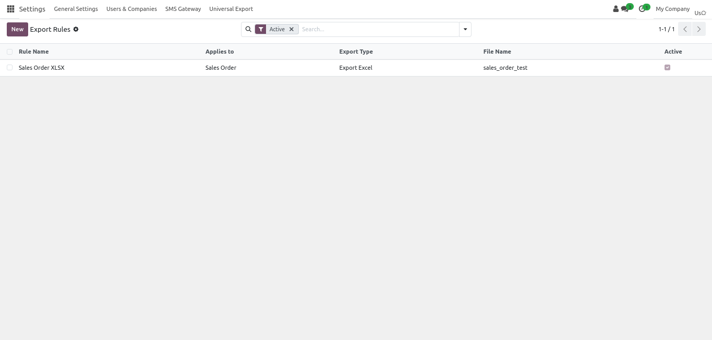
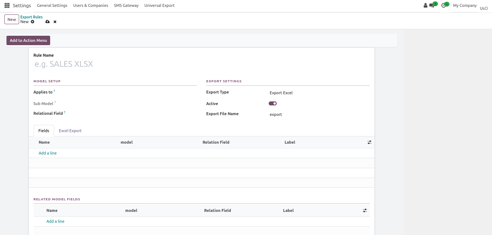
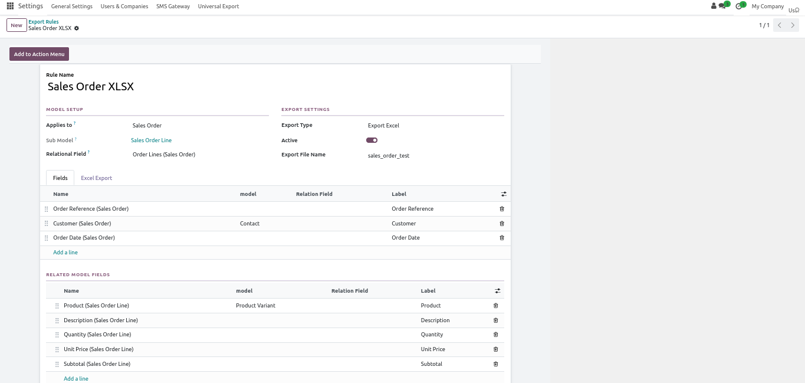
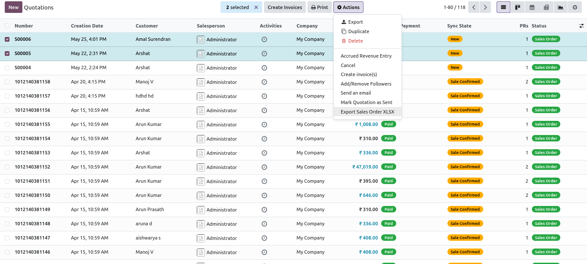
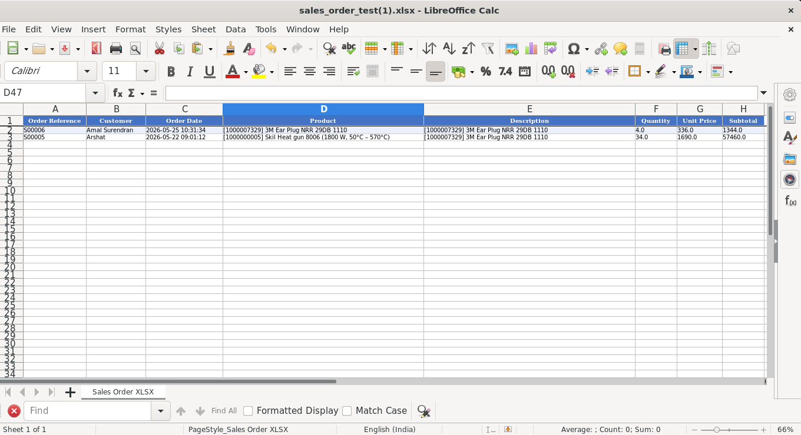
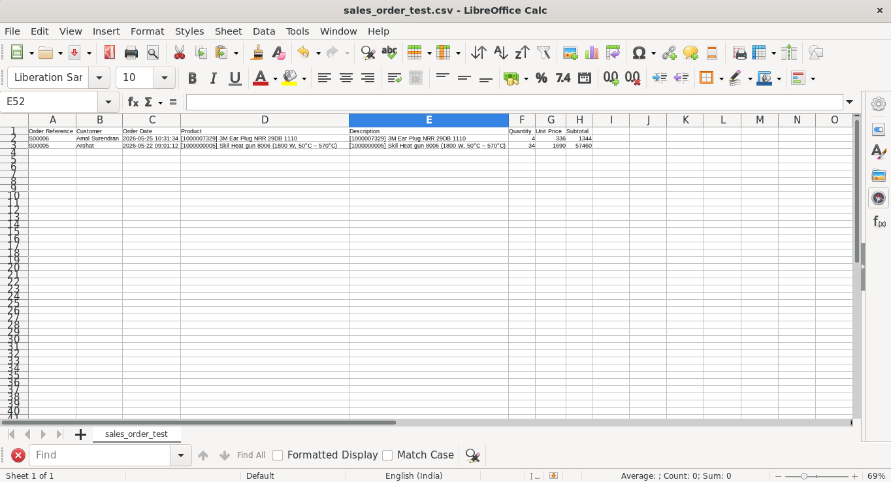

Universal Record Exporter
Configure reusable export rules for any Odoo model and generate Excel, CSV, and XML files with the exact main fields and related line data your team needs.

Why Use Universal Record Exporter?
A practical export solution for Odoo teams that need reusable output rules, flexible formats, and support for relational line exports without custom coding.
Configure exports for any model
Create export rules for the exact business model you want to use and keep them ready for repeated execution.
Export in Excel, CSV, and XML
Generate the output format your users need from the same export setup instead of building separate custom tools.
Include relational line data
Export both parent record values and related order-line or child-line data from a single rule.
Launch directly from Action menu
Add export actions to the selected model so users can run exports directly from the records they select in Odoo.
Animated Export Flow
A merged GIF preview built from the actual exporter screens, including configuration, line mapping, action flow, and generated output.

Screenshots
Review the main exporter screens used to configure rules, map fields, and generate output files.
Merged Export Demo GIF
Export Rule List

Rule Configuration

Main Field Mapping

Relational Line Mapping

Action Menu Export Flow

Generated Output Preview

Follow these steps to configure and run reusable exports on your selected Odoo models.
Step 1: Install the Module
Add the module to your apps path, update the apps list, and install Universal Record Exporter.
Step 2: Create an Export Rule
Choose the target model, set the export format, and define the export file name for your business use case.
Step 3: Select Fields And Lines
Add the main fields to export and optionally configure relational line fields for detailed row-level output.
Step 4: Run Export From Actions
Add the export action to the model and generate files directly from the selected Odoo records.
Frequently Asked Questions
Common questions about supported formats, relational data, and export execution.
Which export formats are supported?
The module supports Excel, CSV, and XML export types from the same rule configuration flow.
Can I export related line records?
Yes. You can include relational line fields so the exported file contains both parent record data and related child rows.
How do users run the export?
Each rule can add a server action to the selected model so users can export directly from the Action menu on chosen records.
Do I need custom code for each model?
No. The module is designed so administrators can configure exporter rules from the Odoo interface without writing custom Python per model.